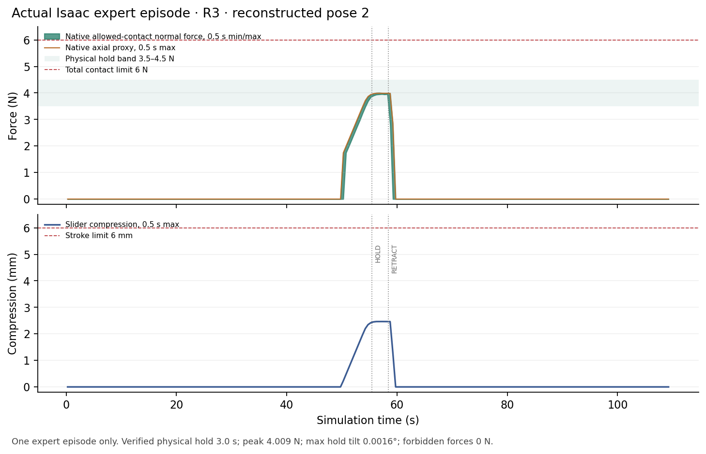

Draft for the November 5, 2026 experiment update. Not linked from the live demo. The latest evidence in this draft is dated November 6 UTC, still November 5 in New York. The running collection has no terminal aggregate result, the new ACT fit is queued, and no new closed loop ACT or Astra result is reported here.
The rebuild has produced one useful native regression result: a repaired expert episode reached its contact task, completed the required hold and returned a successful child result. Separately, CPU replay explains two issues that could otherwise be mistaken for model failures: a STOP profile can report completion while violating our numerical endpoint check, and a decoded Hall spring-load estimate can remain nonzero when the native contact proxy is zero. None of these findings establishes a learned policy result.
Research question
Can we rebuild the experiment on a replacement runtime, preserve the original physical gates, and obtain a fair expert/ACT/Astra comparison? The old Pod was deleted. The original training arrays and ACT weights have not been recovered, so this work starts a new reconstruction epoch. The historical public expert 8/8 and ACT 0/2 remain historical results, with their original cohorts and artifacts.
The immediate question is therefore whether the new source, scene preparation, recording and control chain support new experiments. Recreating a file, passing a CPU replay or starting an inference service does not answer the later question of model performance.
Attempt and configuration
The reconstructed scope has four TRAIN identities, one checkpoint-selection VAL identity and two identities reserved for frozen evaluation. Each uses the same two existing observed poses. The reconstruction receipt is complete, but explicitly leaves physics, seat support, IK, static scene QA and training eligibility unqualified. It also records that the original depth-plane bytes were not recovered. This is reconstruction from available source inputs, not restoration of the lost dataset. [E1]
A new native contact witness was issued from a completed, terminal native run. Its scope is shape-0 witness semantics and conservative six-face classification for the specified retainer/body geometry. It does not requalify an expert episode, validate a model or change old run verdicts. [E2]
The repaired V2 collection uses immutable source version 7: 20 declared slots, 18 native jobs and two geometrically unavailable slots retained in the denominator. The two unavailable cases are not robot successes or native execution failures. The owner is still active. Progress from individual workers, including DONE/return-home reports, is not a terminal collection receipt or an aggregate qualification rate.
Result 1: keep the STOP failure, change the planning request
The earlier fresh collection encountered a STOP preview whose trajectory generator reported Finished but failed the unchanged 64-ULP stationary endpoint check. The original-prefix replay receipt preserves the issued prefix exactly. Its first rejected R3 STOP diagnostic found a joint-position residual of about 3.20 × 10⁻¹¹ rad, against a bound of about 1.42 × 10⁻¹⁴ rad. A subsequent L3 counterexample also exposed a small finite-difference jerk overshoot when continuing the original waypoint after the rejected preview.
The repair does not enlarge either acceptance bound. A narrowly typed rejection may be handled only in a read-only STOP hypothesis. The ordinary checked approach continues to the next fresh 20 Hz candidate, with waiting, STOP and settling sharing the original five-second budget. Current L2 planning requests jerk 1.4999 rad/s³ rather than 1.5, reserving numerical margin while leaving the physical acceptance limit unchanged.
Actual Linux CPU receipts under that requested profile show:
| Recorded schedule used for the hypothesis | Maximum command jerk | Wait ticks | STOP ticks | Total parking ticks |
|---|---|---|---|---|
| R3 | 1.4999000109 rad/s³ | 24 | 1 | 49 |
| L3 | 1.4999000232 rad/s³ | 12 | 9 | 45 |
These are counterfactual command schedules, not new physical executions. Both receipts say physics_executed: false, physical_qualification: false, and all_issued_commands_bit_identical: false. The maximum command difference from the archived schedule is about 1.94 × 10⁻⁶ rad. Future measured geometry and settling are not verified by this replay, and the original failed verdicts remain unchanged. [E3, E4, E11]
One subsequent native expert episode
A newly recorded TRAIN identity / pose 2 / R3 episode from the repaired V2 collection has now completed with child exit code 0, worker_complete: true and physical_pass: true. Its native result reports success: true, physical_validation: true and complete compact capture. The reported contact-force peak is 4.009271 N, forbidden contact force is 0 N, the joint force-and-plane hold is 3.0 s, and maximum hold-plane tilt is 0.001605°. These are one expert episode's native result fields, not a completed independent aggregate audit. [E10]
p001120, second observed pose, target R3. The MP4 uses the original recorded RGB observations, one frame per 20 Hz observation, with no new simulator rendering. It contains 2,190 frames at 256 × 144, 20 fps, 109.5 s of simulation-time playback. The recording reader passed 2,190 frames plus one terminal observation. Recording integrity is not physical training qualification. The collection remains active; this is neither an aggregate expert score nor ACT/Astra acceptance. [E8, E9]

Causal stage check. The original recording reader and given.assemble_samples were also run on this closed worker. They read 2,190 frames / 26,280 native rows and assembled 532 full, same-owner causal H20 windows, all in given_l2_motion. Native actor accounting remains separate: PREPARATION 240, TEACHER_L2 6,924, L2_STOP 25, ANALYTIC_L3_ALIGN 243, and ANALYTIC_L3 18,848 rows. STOP, alignment and contact rows are not promoted into learned-L2 labels. This component diagnostic wrote no training arrays and did not issue owner physical qualification; strict collection-wide export remains pending. [E13]
Playback is 1× simulation time. The original episode took approximately 1,269.829 wall seconds, excluding Kit startup and teardown, so this is not a real time performance claim. The poster is an original recorded HOLD frame at 55.6 simulated seconds. Future Astra clips must identify omitted inference pauses and report LLM latency separately from simulated motion time. [E14]
This clip is separate from the frozen eight-scenario cohort and must not populate any of its result slots.
The research principle
Keep the measurement.
Name the signal.
Result 2: the lower Hall boundary can be repaired without changing the recorded physics
These sensor diagnostics use the retained first-pose R3 capture from the earlier V1 collection. They are separate from the repaired pose-2 V2 video and chart above, and do not retroactively qualify that earlier collection.
CPU replay covered 26,980 actual recorded native rows, approximately 112.42 simulated seconds. Raw compression was slightly negative in 3,045 rows, reaching −1.864278 × 10⁻⁶ m. The new Astra observer initially rejected even the first such row as outside calibrated travel. [E5]
The compact capture path already had a deterministic ADC-equivalent lower-end rule. Reusing that rule maps a tiny negative residual to zero only at the forward sensor-model input. Its existing bound is 3.809856 × 10⁻⁶ m, derived from the native ADC quantizer and pinned calibration slope. Raw measured compression, native state, upper travel domain and physical gates remain unchanged.
The candidate replay made zero input-mapping differences and zero full-packet differences against the recorded capture model. Across 2,248 saved Hall observations, ADC values matched exactly, and maximum voltage and decoded-force residuals were both zero. These checks establish consistency with the recorded sensor model; they do not establish hardware calibration, useful model attention to Hall, or a native Astra rollout. [E5, E6]
Result 3: spring preload is not patient pressure
During the initial settle, the decoded simulated Hall spring-load estimate is 1.497564 N, while the native axial contact proxy is 0 N. The two signals describe different quantities. A preloaded spring can carry load before external patient contact; the decoded signal must not be relabeled as measured surface-normal pressure or substituted for the native contact-force success gate.
During recorded HOLD, mean decoded spring load was approximately 4.020377 N, versus 3.982442 N for the native proxy. That agreement in one operating phase does not erase the difference at rest. The Hall signal is explicitly simulated ADC, the operating curve is spring-anchored, and bench_verified remains false. [E5, E6]
This finding changes how observations should be explained to a supervisor. It does not justify changing the original force controller or physical acceptance thresholds.
Result 4: depth is a measurement, not an anatomical target estimator
The stored compact depth is 256 × 144, quantized at 0.1 mm, with 93.636% valid pixels in this recorded case. Invalid samples are stored as zero with a false validity mask; the original invalid sentinel values are not retained. The existing 640 × 360 helper correctly rejects this different shape. A diagnostic summary of the actual stored resolution is not qualification of the new native Astra camera path. [E5]
The depth probe is selected by projecting the prescribed reference pose. During the first recorded HOLD frame, its optical Z is 0.4773 m, while prescribed-reference Z is 0.532426 m: the observed surface is about 55.13 mm in front. Foreground tool occlusion is a plausible explanation, not a proven classification of that pixel. A numerically correct backprojection does not make the pixel an independent anatomical estimate. [E5]
The next native observer check must preserve actual camera dimensions, intrinsics, units, validity and frame/physics binding. Resizing an old saved map would not prove that contract.
Limits and current work
| Work item at this draft's cutoff | Status | What remains |
|---|---|---|
| Reconstruction receipt | Complete | Separate scene/physics and data acceptance |
| Fresh native contact witness | Qualified within its stated semantics | No expert/model qualification inferred |
| STOP and Hall replay diagnostics | Complete, CPU only | Native regression and sensor binding |
| Repaired TRAIN pose-2 R3 expert child | Completed native result; recording integrity passed | Original owner termination and strict aggregate export/audit |
| V2 expert collection | Running: 18 jobs within 20 declared slots | Terminal owner, drain/release and unchanged physical/phase/source validation |
| Official ACT, 20,000 updates | Queued behind accepted fresh export | Actual fit, full-VAL selection, CPU equivalence and native admission |
| Frozen matched expert/ACT/Astra comparison | Eight source scenarios prepared before model outcomes | Actual 24 method-slot executions, failures and independent audits |
The evaluation runtime is separately frozen as source8 (cf551566c0285a086d197553cee3299f4444f464); current collection and its queued training retain source7. A source freeze and CPU checks do not establish a new physical model result. The source8 export draft records the exact candidate dependencies and the remaining native verification/publication boundary.
The frozen case manifest contains two identities × two poses × R3/L3 = eight scenarios, and explicitly records that model outcomes were not consulted. That is a source-preparation receipt, not eight physical successes. TRAIN and checkpoint-selection VAL results will remain separate from this small frozen-identity comparison. Even a completed comparison would not establish broad population or clinical generalization. [E7]
Next step and publication rule
Finish the existing collection owner, apply the unchanged export reader and retain all 20 slots, including the two geometric absences and every failure. Train only from newly accepted data. TRAIN/selection smokes are diagnostic: after strict authentication, model/source identity, original owner and safely closed trace checks, a smoke physical rejection is retained as a negative result. There is no extra requirement for both smokes to pass physically before the fixed comparison. The source9 workflow makes this operator-only correction before any smoke or frozen-model outcome; every per-case physical qualifier and all eight scenarios remain unchanged. A negative smoke does not establish a usable model. Evaluate the frozen eight without changing its cases after observing model outcomes.
For publication, append a new cohort artifact using the matched result template and its schema. Keep all eight scenario slots and all three methods. Unknown outcomes and unavailable videos stay null or explicitly unavailable; only independently audited terminal results may become success counts. The append guide lists the exact update commands and evidence required. Do not rewrite the historical result JSON or replace the existing two public clips.
Evidence record
The small selected-field evidence extract contains E1–E14, original receipt byte counts and SHA256 identifiers. It removes host addresses and absolute native paths. Original full receipts and raw arrays remain with the experiment owner; the extract does not independently rerun them. The STOP endpoint diagnosis is additionally documented in the development source notes; the public extract intentionally retains only the bounded summary fields rather than command arrays.
No human raw data, body meshes, source RGB/depth arrays, training arrays, weights, credentials or complete simulator environment accompany this draft. The only new media asset is the small, explicitly scoped actual expert recording linked above.